QUIC protocol for resource-constraint devices
MABILLE Florent - August 2019
Motivations of QUIC for resource-constraint devices
- Handshake delay
- QUIC work in the user space
- Reliability
- Streams multiplexing
Resource-constraint devices
- Small device with limited CPU, memory and battery
- Different applications
- Collect data
- Accomplish an automated task
- Challenges
- Memory
- Power consumption
- Communication
- Security
The target device
Raspberry Pi 3b+ (CPU clock of 1.4 GHz and a RAM memory of 1GB)
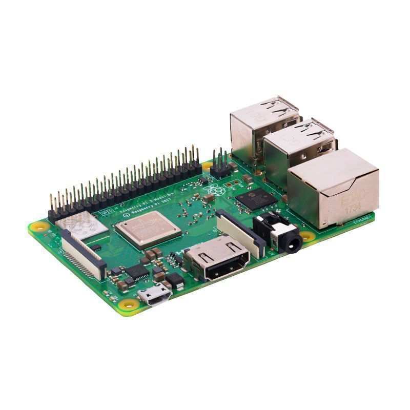Comparison between Normal PC and Raspberry Pi
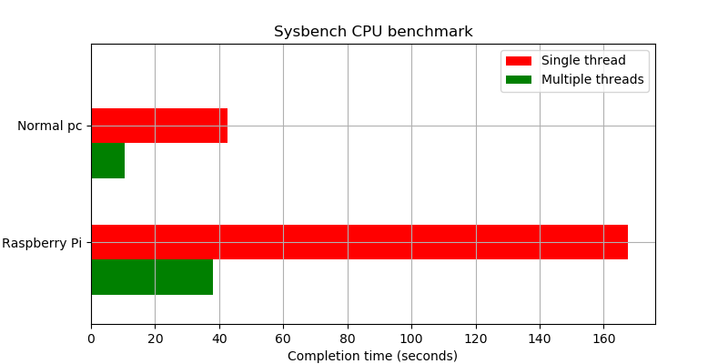
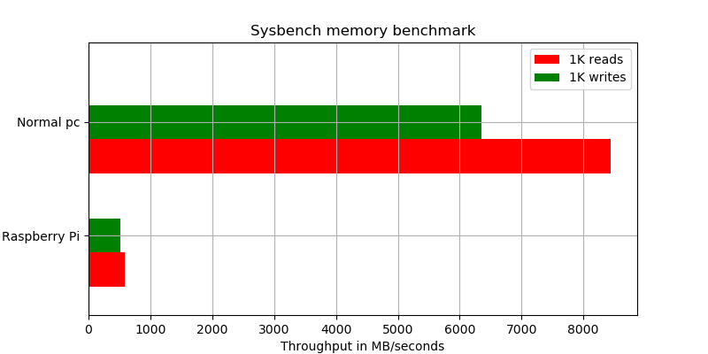
QUIC protocol
- Work on top of UDP
- Reliable data transfer
- Fast connection establishment
- Encryption and authentification
Automatic benchmark tool
- Deploy a protocol implementation from a Github repository on different hosts
- Set up the implementation
- Launch different measures (CPU, memory, network analysis, ...) on hosts
Phase
- Installation
- Benchmark
- Collection
Configuration file
- Hosts
- Github
- Program dependencies
- Scenario
Example of a configuration file
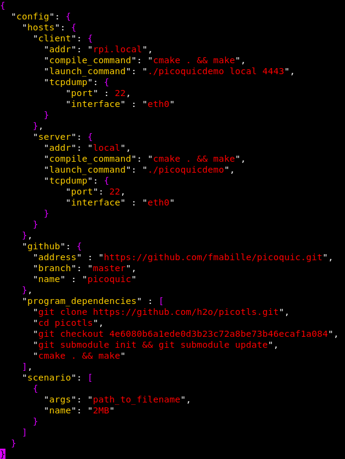Measured informations
- CPU and memory percentage
- Network analysis
- Context switching
- Information about the memory, thread, ...
Experiments
Methodology
- Raspberry Pi as the client and server
- Run with a Ethernet and a WiFi connection
-
Two implementations of QUIC
- Quic-go
- Picoquic
- One HTTP/2 with TLS 1.3 in Go to compare (named https-go)
- Different transfers of file (500 KB, 2 MB and 5 MB)
- Add some load to simulate task on the Raspberry Pi
| Parameter | Values |
|---|---|
| Role | Client - Server |
| Network connection | WiFi (30 MBps) - Ethernet (300 MBps) |
| Number of CPU stress | 0 - 4 |
| File size | 500 KB - 2 MB - 5 MB |
Raspberry Pi as the client
Transfer of a 2 MB file via Ethernet
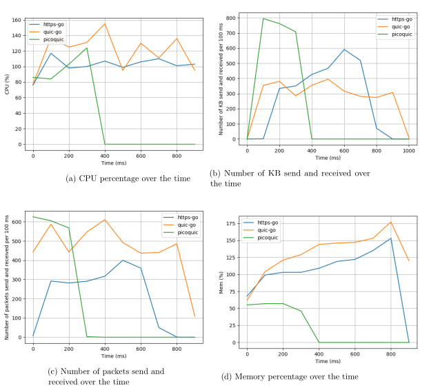Via WiFi
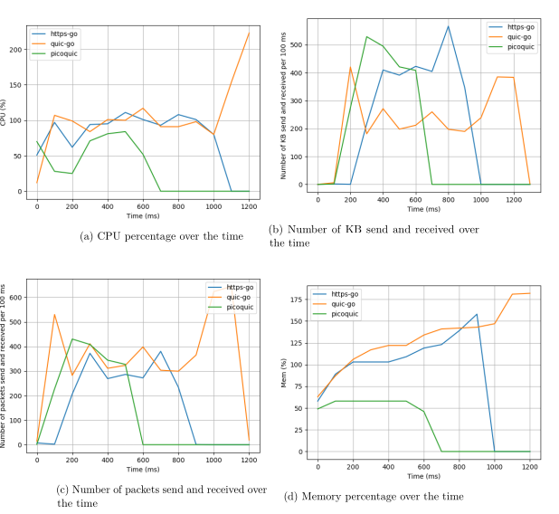Analysis
- Picoquic is fast but suffers with the WiFi connection
- Quic-go and https-go uses more memory
- Number of context switch is more important with quic-go
- Quic-go sends and receives a lot of packets
- Quic-go does a lot of context switch (1200, 20 for https-go and 10 for picoquic)
Transfer of a 2 MB and 5 MB file via Ethernet
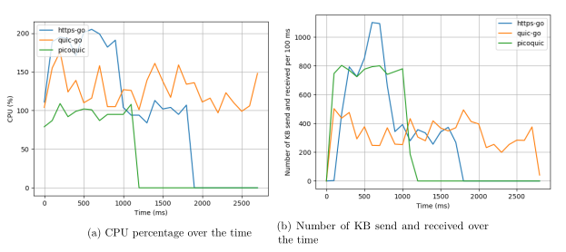 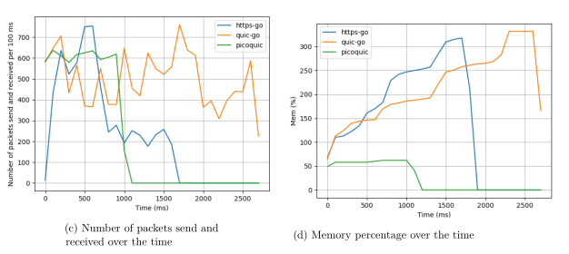Via WiFi
Analysis
- Streams pertubate https-go (high CPU usage, delay for receiving and send data)
- Quic-go and picoquic not affected and send at the same rate
- 4400 context switch for quic-go, 40 for https-go and 12 for picoquic
2 MB via Ethernet with some load
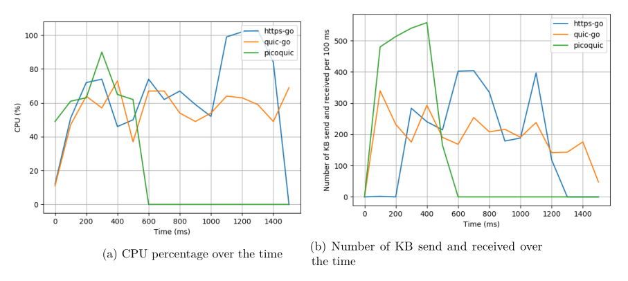 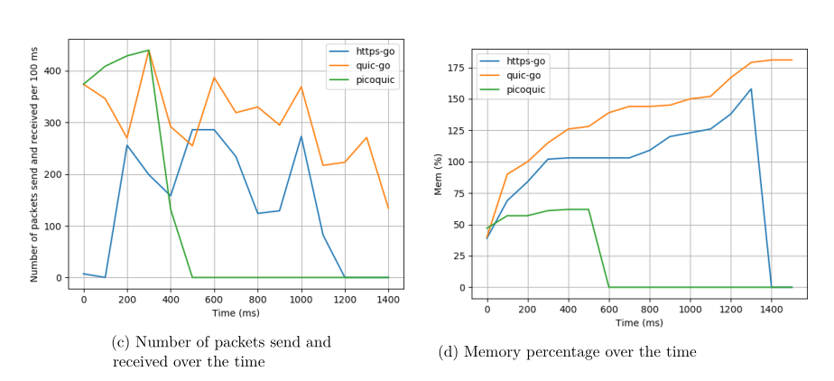Analysis
- Decrease of the transfer rate, utilization of the CPU
- Picoquic is still fast in comparison with quic-go and https-go
- Increase of the context switch made by https-go and quic-go (306 for quic-go)
Raspberry Pi as the server
- PC will request some files (2 MB, 5 MB and 2 MB and 5 MB)
- RPI will not be stopped and will be benchmark
Via Ethernet
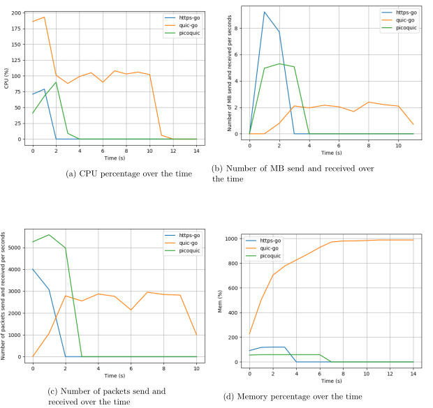Via WiFi
Analysis
- Picoquic and https-go are fast
- Quic-go takes a certain before sending the first data
- Quic-go uses a lot of memory
- Slowdown when we add some load
Summary
Thanks for your attention.
QUESTIONS ?